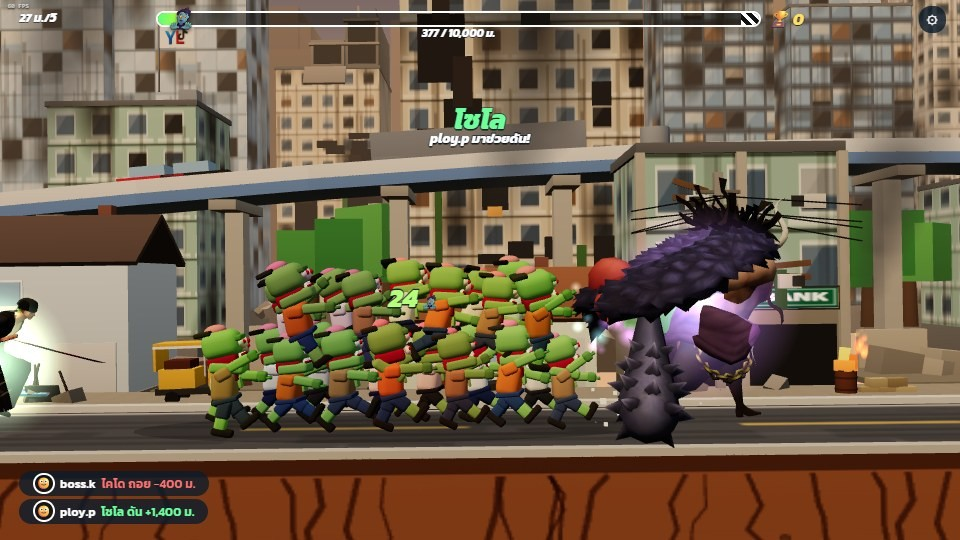
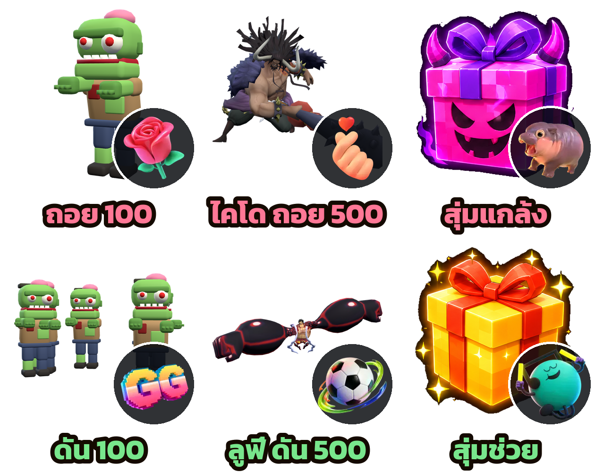
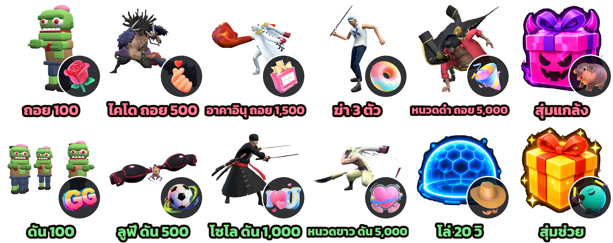
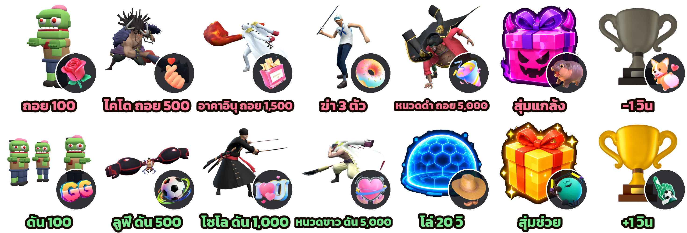

ซอมบี้กินสมอง · คำสั่ง
เกมไลฟ์ YLTik · ฝูงซอมบี้วิ่งไปบ้านที่ 10,000 ม. · คนดูส่งของขวัญช่วยดัน หรือแกล้งดันถอย/ฆ่าซอมบี้ · ซอมบี้หมด = แพ้ เริ่มใหม่ · ชนะ = วิน +1
📦 พรีเซ็ต + รูป
นำเข้าใน YLTik: ไฟล์ zombie-yltik-preset.jnt → Import พรีเซ็ต · ในกฎแต่ละอันใส่คำสั่งในช่อง command ตามปุ่มก๊อปด้านล่าง



🏆 นับวิน (YLTik)
ชนะ = วิน +1 เอง · แพ้/เริ่มใหม่ไม่ลบ · ของขวัญ สู้ ๆ! (299💎) = +1 วิน · คอร์กี้ (299💎) = −1 วิน (กฎแบบ Webhook ยิงไป http://localhost:4621/win/up/1 / /win/down/1)

🧟 ช่วย ดันฝูงไปข้างหน้า
ดันฝูงซอมบี้ไปข้างหน้า · เลข = เมตร (ส่งรัวคูณตามจำนวนครั้ง)
ตัวละครช่วยวิ่งมาจากข้างหลัง ดันฝูงไปข้างหน้า มีแสงตามสกิล ยิ่งของแพงแสงยิ่งแรง · คำสั่ง luffy N zoro N whitebeard N
สุ่มช่วย: การ์ดหมุนสุ่มเมตร แล้วดันไปข้างหน้าตามที่ได้
โล่: กันโดนแกล้งทุกอย่างตามวินาที
💀 แกล้ง ดันถอย / ฆ่าซอมบี้
ดันฝูงถอยหลัง · ตัวร้ายวิ่งสวนมาจากข้างหน้า · คำสั่ง back N kaido N akainu N blackbeard N
ฆ่าซอมบี้ N ตัว · ถ้าเหลือตัวเดียวแล้วโดน = แพ้ เริ่มใหม่
สุ่มแกล้ง: การ์ดหมุนสุ่มเมตร แล้วดันถอยหลังตามที่ได้
🎮 วิธีเล่น สตรีมเมอร์
ฝูงโดนดัน/ผลัก: น้อย = เซ · กลาง = ล้มไถล · เยอะ = ปลิวหมุนกระเด็น · ท่าตามตัวละคร: ไคโดตีปลิว · อาคาอินุระเบิดลอยสูง · หนวดดำยกแล้วกระแทก · หนวดขาวแผ่นดินไหวเด้ง · ลูฟี่เด้งตีลังกา · โซโลพุ่ง
เริ่มจากซอมบี้ 1 ตัว (เรา) วิ่งไป 10,000 ม. · กินคน = +1 ตัว (คนหายาก) · รถมีคนติดอยู่ร้องขอช่วย กินแล้วได้หลายตัว
ทุกตัวอ้าปากงับ · กินคนเห็นอ้าปากกว้างก่อนแล้วค่อยเพิ่มตัว
รถวิ่งสวนมาชนฝูง ซอมบี้ตายบางส่วน · กระโดดข้ามได้
หลุมกลางถนน ฝูงกระโดดข้าม บางตัวตกลงไป
เหลือตัวเดียว: สตรีมเมอร์ต้องกดกระโดดหลบเอง โดนอะไร = แพ้ เริ่มใหม่
ถึงบ้าน: ทุบประตูให้พัง · โดนของแกล้งระหว่างทุบ = "โดนแกล้ง! นับใหม่" ประตูกลับมาเต็ม · พังเข้าไป = ชนะ (วิน +1 ในแอป YLTik)